儿女们未必不爱自己的父母，他们相信自己是爱的，但却在日常生活的淘洗中逐渐失踪了那份感情，爱与尊敬只剩下一个自以为是的幻影。
——豆瓣网友鸽仔

小津安二郎的《东京物语》是我心目中的十佳电影。
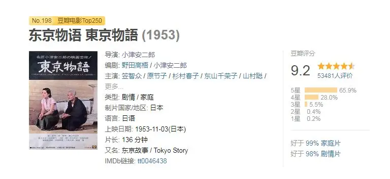
这部电影，我隔一段时间就会拿出来看一遍。
很神奇，每次都会百感交集。
它那样平淡、那样节制，却拥有穿透时代的的情感力量。
每个镜头的背后你总能够感受到一双温润的双眼，静卧在榻榻米上慈祥地观望着身边的一切。
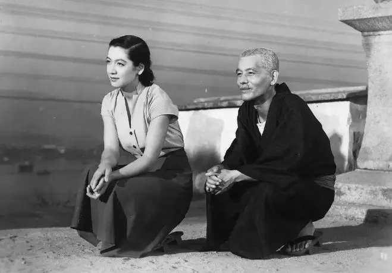
这份热忱和安静在充满浮躁的如今显得更加珍贵，甚至是奢侈。
但正是小津的这份执着和对生活的尊重却捕捉到了家庭生活背后恒久的人性和情感。
那样美好，又那样让人心碎。
那样平淡，又那样庄严。
那样浅显，又那样深刻。
因此《东京物语》影响了一大批电影大师，常年入选权威杂志《视与听》影史最伟大的十部电影。

电影讲述的故事非常简单，老父亲周吉和自己的老伴打算动身前往远处的东京看望自己的子女。
出发前，邻居就很羡慕地说，“孩子们在东京一定等急了.....你们的孩子真有出息，你们真是幸福”。
可是当两位老人来到东京后，却发现，孩子们都很忙。
他们首先来到了大儿子家，大儿子是一个街坊医生，诊所就开在自己的家中。
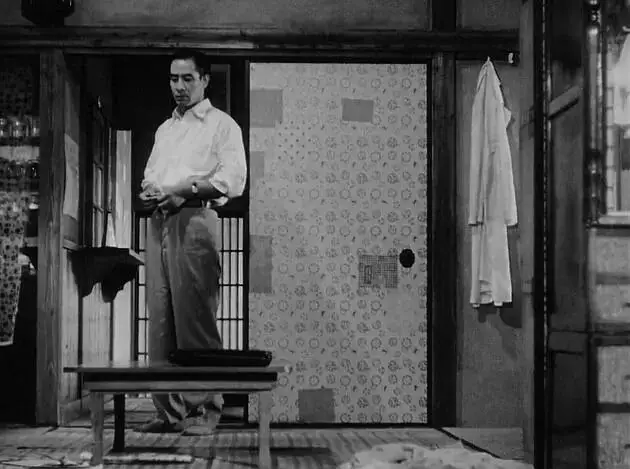
为了给两个老人腾地方，不得已，大儿媳妇只能将自己孩子的书桌移到房间的角落。
孩子很不理解，生气地将书摔在地上。

两个老人在大儿子家住了将近三天，却还没有机会在东京转一转。
终于，大儿子抽出了时间，打算带着老人游玩。
正当大家一切就绪的时候，大儿子忽然收到出诊的请求，出游只能作罢。
看着孩子这么不容易，老人家也很理解。
只是默默地坐在阳台上呼吸着东京的空气。

大儿子很忙，老人家又来到了大女儿家，大女儿开着一个美容美发店，工作自然也是很忙。
老人来之前，女婿问大女儿，老人现在在大哥家，我是不是要去打个招呼。
大女儿却说“不用去了，反正老人会过来的”。
当老人过来后，女婿从外面买了糕点回来，却被大女儿抱怨“怎么买这么贵的东西呢....”

不用多想，大女儿当然也没有时间带着老人在东京游玩，但是老人能够看到自己的女儿已是非常满足。
而令两位老人最感动的是二儿媳纪子，当自己的大儿子、大女儿没有时间并把他们推给纪子的时候。
纪子没有抱怨，而是热情地接待了两位老人，她虽然工作也很忙，但依然请了假陪着老人在东京游玩。

看着这么大的东京，两位老人不禁感慨：东京这么大，失散了，这辈子都见不了面了。

大儿子和大女儿也不好意思让纪子一直陪着老人，毕竟别人也有工作，所以大女儿想了一个办法。
那就是每家出点钱，将老人送到热海去旅行，两个老人可以泡泡温泉、晒晒沙滩，大家也可以忙自己的事。
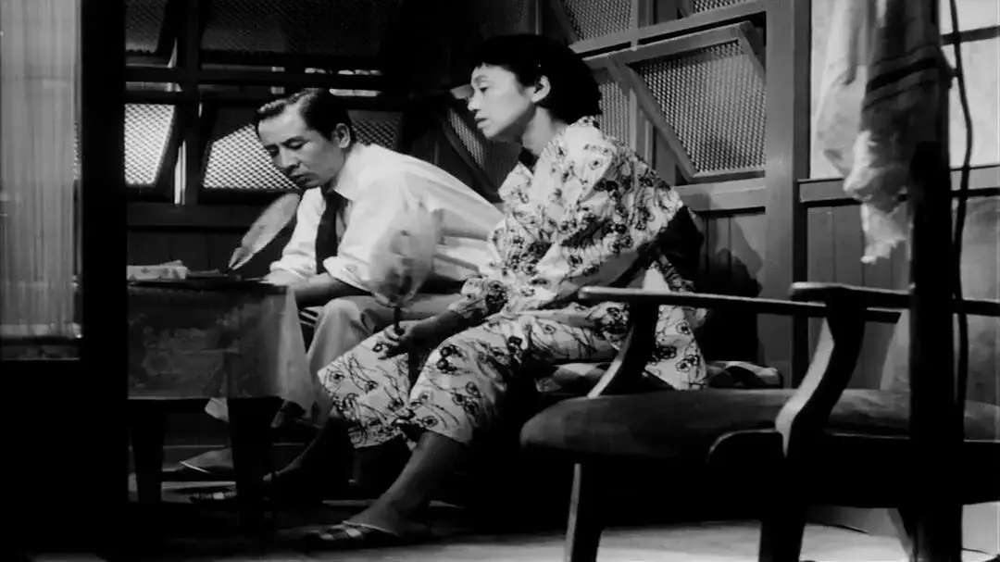
子女破费送自己去旅游，两个老人自然也很高兴。
可是当他们到了热海的时候才发现，这是年轻人来玩的地方。
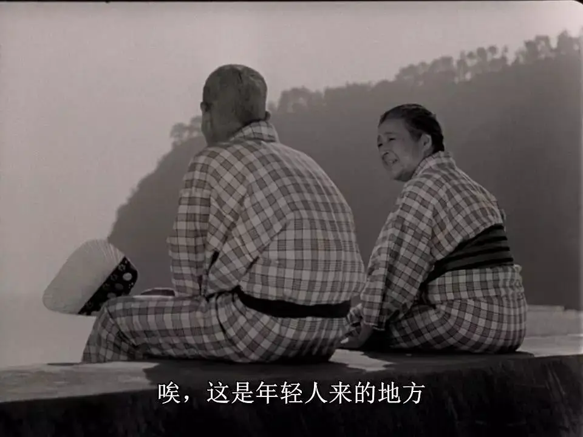
隔壁的旅客整晚在宴乐和打麻将，两位老人一晚上都没有休息好。
第二天，老人拖着疲惫的身体望向大海，久久没有说话。

忽然，周吉笑着和老伴说，要不我们回去吧，有些想孩子了。
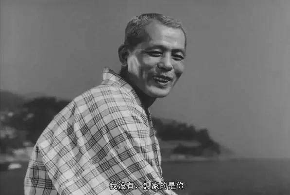
于是，两位老人当天返回到大儿女家。
看到两个老人忽然回来，大女儿颇有些不高兴，“还以为你们至少在那里玩几天呢，怎么一天就回来了.......恰好晚上朋友要来家里开会......回来也不提前说一下”
自知自己给儿女带来不少麻烦，老人笑眯眯的说，恰好有老友也在东京，晚上就去看望一下他们，就先去朋友家住一晚。
出门后，老人心里很不是滋味，苦笑着说：终于无家可归了。
去朋友家也只是说辞，还不知道朋友家方不方便住一晚。
因此，两人商量着，老伴去纪子家，因为纪子一定不会将他们拒之门外，但是纪子家很小，不方便两人一起住下。
所以，周吉独自一人去拜访了老友。
原来大家都不容易，没有办法给他提供睡的地方，但是他们都很仗义，愿意陪他喝到天亮。

几杯小酒下肚，大家的苦水纷纷吐了出来。
朋友家的孩子其实只是一个科员，但为了面子对外总说自己是部长。
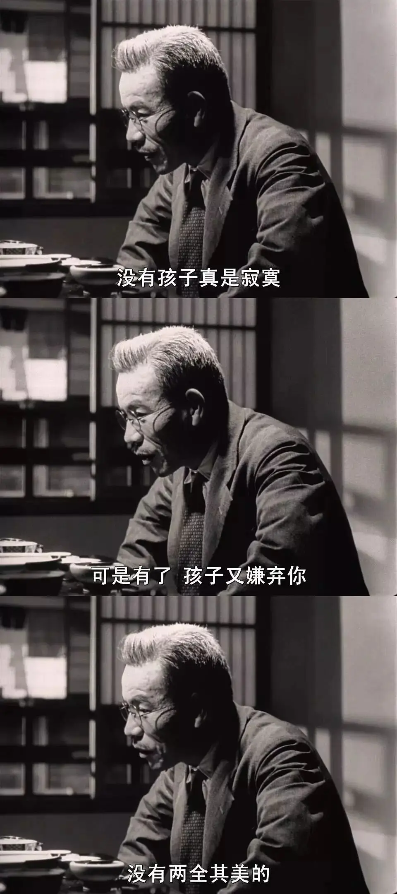
周吉也不禁感慨：
在来东京之前，我都以为儿子有所成就，原来只是个街坊医生.....我和你一样不满，大概是为人父母的欲望，可欲望是没止境的 ，想开点吧....也许东京真的是太大了。
这一天对于两位老人来说过得特别漫长。
老伴没有像周吉那样落魄在酒馆里，但是一样不是滋味。
老伴心里难受，不是因为纪子不孝顺，而是因为纪子对她太好。

原来自己的二儿子昌二早已在战争中丧生，纪子守寡多年，房间里仍然放着昌二的照片。
看着昌二的照片，老伴不禁感慨：可能是离得太远了，总觉得他在很远的地方还活着。
而看着年轻善良的纪子，老人心里更不是滋味：
昌二已经死了八年 你还把他的照片放在那里，我不禁为你难过，你还那么年轻，我感到对不起。
老人告诉纪子如果碰到了合适的人，要好好把握，不必介怀，要不然将来老了无依无靠，会很寂寞。
而善良的纪子却告诉她：没关系 我不会让自己老的。
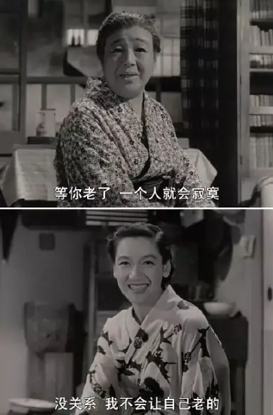
夜里，纪子睡不着觉，偷偷地落泪。

第二天，两个老人在东京住了不到一周，便决定离开。
告别时，老伴告诉子女：“今天见了大家，将来万一有个什么，你们也不用特地赶来了....我说真的，我们住的太远了。”
返回途中，老伴在大阪转车时病倒了，也正是这样的机会，他们在大阪见到了自己的小儿子。
身体好一些后，两个老人便返回了老家，虽然一路心酸，但是十天内见到了所有子女。
老伴笑着告诉周吉：我们这样应该算是好的了吧，我们应该感到幸运。
不久，老伴病逝。

自己的身体自己心里最清楚，这场旅行似乎是一场早有预感的告别之旅。
怪不得，当小孙子告诉老伴自己将来想做医生时，老伴会说：等你做了医生，我都不知道我会不会活着。
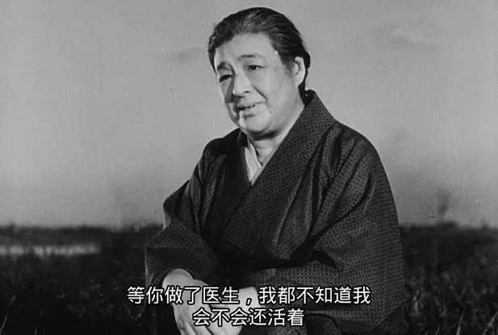
甚至在与纪子独处的那一晚，纪子真诚地和老人说：下次来东京 ，请妈再到我这。
而老人却笑着说：谢谢......不知道再有没有机会再来。
也怪不得老人告别儿女时，会说那样的话。
即使是临终之言，老人也不想让孩子担心，只是笑着把心酸和对子女的爱独自吞咽到肚子里，隐秘而伟大。
我也不禁想起，前年我带爷爷奶奶游玩了上海、杭州后，爷爷笑着告诉我“将来要是有个什么....也了无遗憾”
我忍着没有哭，但每次想起总是如鲠在喉。
我知道这句话的分量，但我体会不了他们十分之一的心酸和眼泪。

老人去世，大家纷纷赶回来处理后事，有人痛苦，有人悔恨，但悲伤很快就变成过眼云烟。
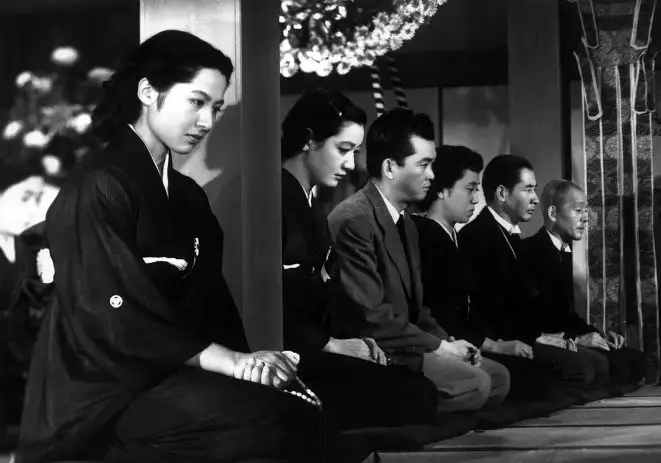
饭桌上，大女儿甚至和大家说：说起来可能有点不孝，我觉得爸先死比较好，妈还可以去东京帮帮忙....
母亲还没有下葬，大女儿还向周吉索要了母亲的和服和好的物料，说是为了留作纪念。
母亲后事安排好，大家因为繁忙，很快就离开了家乡。
只有纪子留下来多陪伴周吉了几日。

纪子住了几天，因为工作，也不得已要告别老人和家中还未出嫁的小女儿。
临别时，小女儿愤慨地告诉纪子：他们太自私了，讲完一堆空话 ，头也不回地走了，外人还有感情，骨肉却没有....
纪子却温柔地告诉她：
他们有自己的生活…在你这个年龄的时候，我也会像你这么想,可是子女们长大了，会离开自己的父母。
当一个女人到你大姐这个年龄，她会有自己的生活，我相信她没有恶意，他们都以自己的生活为重。
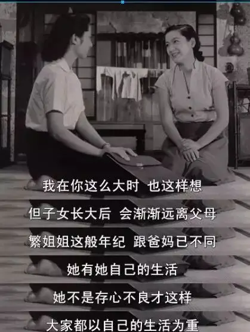
当纪子向周吉告别时。
周吉非常感谢纪子，并告诉纪子，“你妈曾和我说，那一晚是她最幸福的一晚，我替她向你表示感谢”
周吉也告诉纪子，希望她能够重新开始，这也是老伴的愿望。
纪子欲言又止，终于还是告诉周吉：
不，我不像你们所说的，我很自私，并不如爸妈想象般，常常惦记昌二.....
最近,甚至想不起来的时候也有，也许忘记他的时候更多，我也想过不能长此以往一个人生活，有时半夜醒来，也会想到这个问题......
天天一事无成的过日子，有时十分寂寞.....我内心深处，还在等待什么似的.....
所以我很自私，但我没勇气向妈表明。
周吉却慈祥地告诉纪子：不要紧，你是一个好人，因为你坦诚。

最后，周吉不禁感慨：真奇怪，自己的子女，反不及你这个外人来得孝顺。
纪子离开后，周吉独坐在家中望向远方的大海，海上行驶着往来的船只。
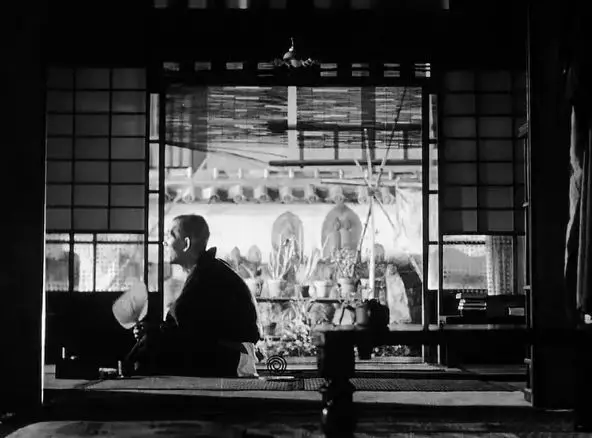
真是不可思议，小津能够使世俗生活焕发出巨大的艺术魅力。
这份魅力既来自于固定机位、微微上仰的视角、匀称稳定的画面这些高度风格化的形式技巧。
也来自于演员精彩的表演。
如果你亲自看完了《东京物语》，由原节子饰演的纪子绝对会成为你永难忘记的日本女性形象。
原节子不是用夸张的表情，而是用细微的动作自然表现强烈的喜怒哀乐，成功地塑造了一个坚强、独立、温婉大方而又有主见的女性形象。
原节子此前和黑泽明有过合作，演技曾受到怀疑和诟病。
但是原节子遇到了自己的伯乐小津安二郎，她几乎出演了小津全部的作品。
原节子刻画的电影形象打动了无数人，在《电影旬报》“二十世纪最伟大的日本女演员”的评选中，原节子位列第一。
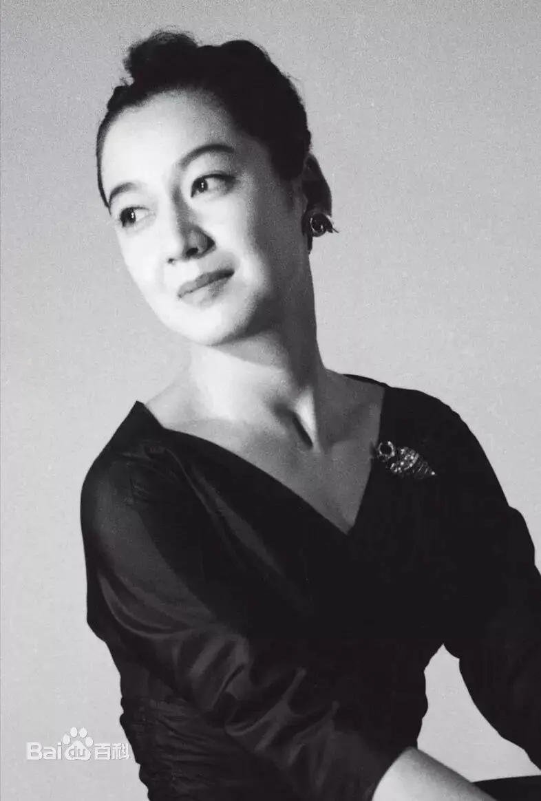
小津安二郎曾这么赞扬原节子：
我拍了二十多年的电影，像原节子那样能够深入理解角色并展现精湛演技的女演员非常罕见......
虽然她的戏路有点窄，但若有适合她的角色，便能展现富有深度的演技。
而这只千里马也甘心为了伯乐走向寂寥。
1963年，小津安二郎得癌症去世，这一年事业如日中天的原节子也忽然淡出影坛。
在出席了小津安二郎的告别仪式后，此后没再出现在媒体前，直到去世。
原节子终身未婚，成为日本永远的女儿。
而饰演周吉的笠智众也是小津电影中永远的男主角，他抑制感情的表演和平静少语的形象，被当作日本人的“父亲”。
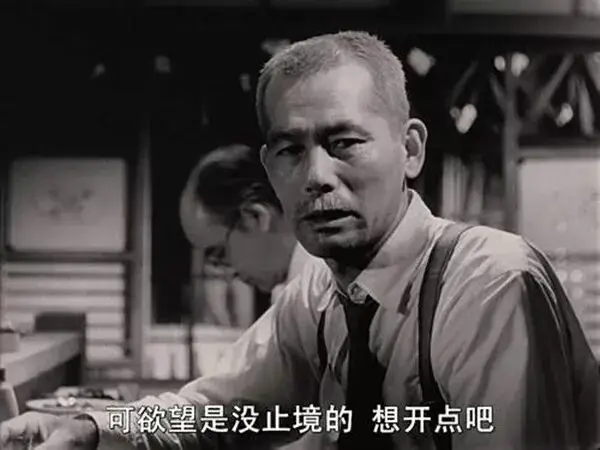
而真正成就小津安二郎电影成就的是他对生命的观望。
在小津看来，事情、快乐都是转瞬即逝的，而生命是永恒的，一切都来源于平淡，最终也归于平淡。
所以要捕捉到生命的永恒，小津就让日常庄严。
因此，电影中很多地方、很多台词看似平常，背后却浸透着生死和永恒。
小津的确捕捉到了传统家庭生活中父慈子孝传统观念的破灭，以及现代家庭面临的焦虑和不安。
所以他的电影能够引起世界性的共鸣。
面对危机，小津像电影中的老人一样，他没有去指责，而是选择用寡言的温润和微笑去承载失望和心酸。
而这一切都源于小津对父女之爱的坚守和执着。
他自己也是如此践行，小津终身未婚，一直和母亲居住直到去世。
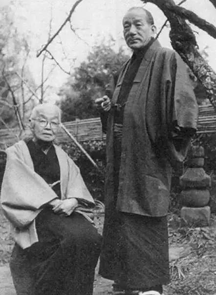
▲小津与自己的母亲
而当我们面对现代家庭里的危机和冷漠时，可不是喊一句“树欲静而风不止，子欲养而亲不待”的无奈之言就能解决的。
我们首先要像纪子那样承认自己是自私的，因为一个真正去爱的人才会知道自己的爱是多么的有限和贫瘠。
也唯有对爱、对自己有更清醒的认识，才能够真正的理解别人，才不会对那些没有做到的人有埋怨和苦毒。
也正是知道自己的软弱和无力，才会去仰望那爱的源头，才会在信仰中重拾爱的勇气并变得柔和谦卑。
才能真正地在父母面前常存亏欠的心，也才能真正地聆听和尊重他们。
反倒是那些将自己完全埋在自我的前程和算计中的精明人，总是会说长道短，又从来都觉得自己对父母没有任何亏欠。
岂不知，我们不仅没有爱的能力，就连发现父母需要的能力也没有，甚至，我们都不知道怎么爱自己。
关注并回复：东京物语
获取电影资源
相关推荐：
《举报者》| 别人有忏悔录，我们有厚黑学
这是一部绝不可辜负的经典
十个破土而出的希望
击垮纳粹独裁的六份传单
《乡愁》 | 没有一个人能够将信仰拍的如此诗意和凝重
100双绝望的眼睛
奥斯卡影帝，你把自己演死了
六百击 | 为了梦想，也为了尿不湿
这里没有挑逗你眼目情欲的小鲜肉
也没有挑动你肉体情欲的段子
更没有膨胀你今生骄傲的鸡血
我们只在乎那些最质朴真诚的作品
在那里我们才能恢复真正的想象力
我们也坚信这才是我们真正需要的

ID:Six_hundred_hits
长按二维码，一键关注
【六百击】
-END-
电影评论
尽情分享朋友圈

苹果打赏
通道
小提示：文末广告是腾讯配送广告，内容与本号无关，但您的每次点击（无需反复点）都会给平台带来几毛收益，欢迎您点击支持六百击。